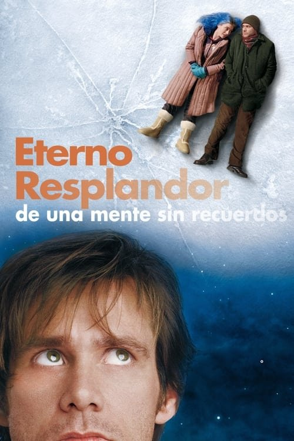

¡Olvídate de mí! (2004)
Sinopsis Rápida
¿Qué pasaría si pudieras borrar a tu ex de tu memoria? Joel y Clementine se enfrentan a las consecuencias devastadoras de un procedimiento que borra el recuerdo de las relaciones fallidas.
Sinopsis Detallada
¡Olvídate de mí! explora las complejidades del amor, el desamor y la memoria a través de la historia de Joel y Clementine, quienes deciden someterse a un procedimiento experimental para borrar el recuerdo de su tormentosa relación. La película, dirigida con maestría por Michel Gondry, ofrece una reflexión profunda sobre la naturaleza de las relaciones, la identidad y el significado del pasado. La narrativa no lineal y la estética visualmente única sumergen al espectador en una experiencia inolvidable y emotivamente perturbadora. La excelente química entre Jim Carrey y Kate Winslet dota de autenticidad a la complejidad de sus personajes.
¿Por qué tenés que verla?
- Una exploración conmovedora del amor y el desamor, llena de momentos inolvidables.
- La dirección innovadora de Michel Gondry crea una experiencia visual única y cautivadora.
- Su impacto cultural ha generado debates sobre la memoria, el olvido y la identidad personal.
- Interpretaciones memorables de Jim Carrey y Kate Winslet.
Idea Extra
Análisis del simbolismo y la narrativa no lineal en ¡Olvídate de mí!